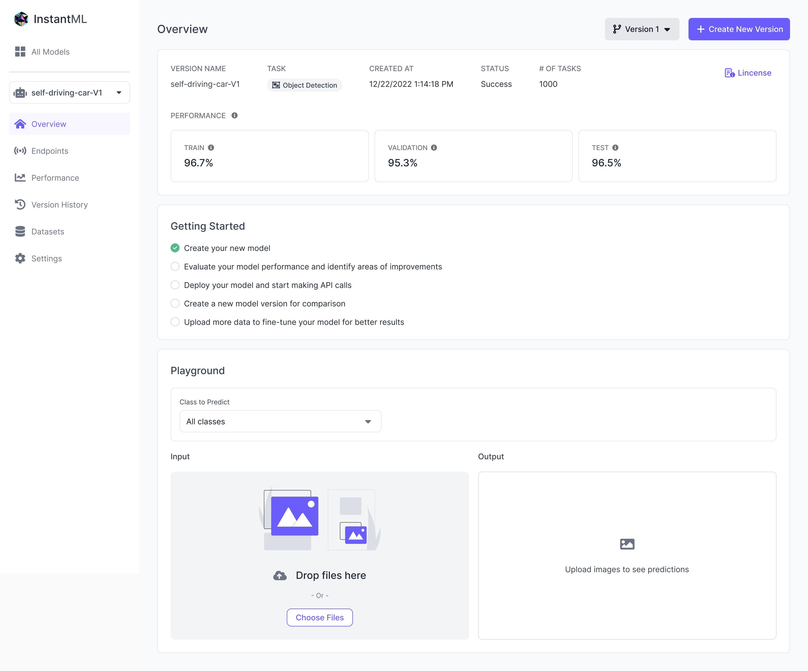
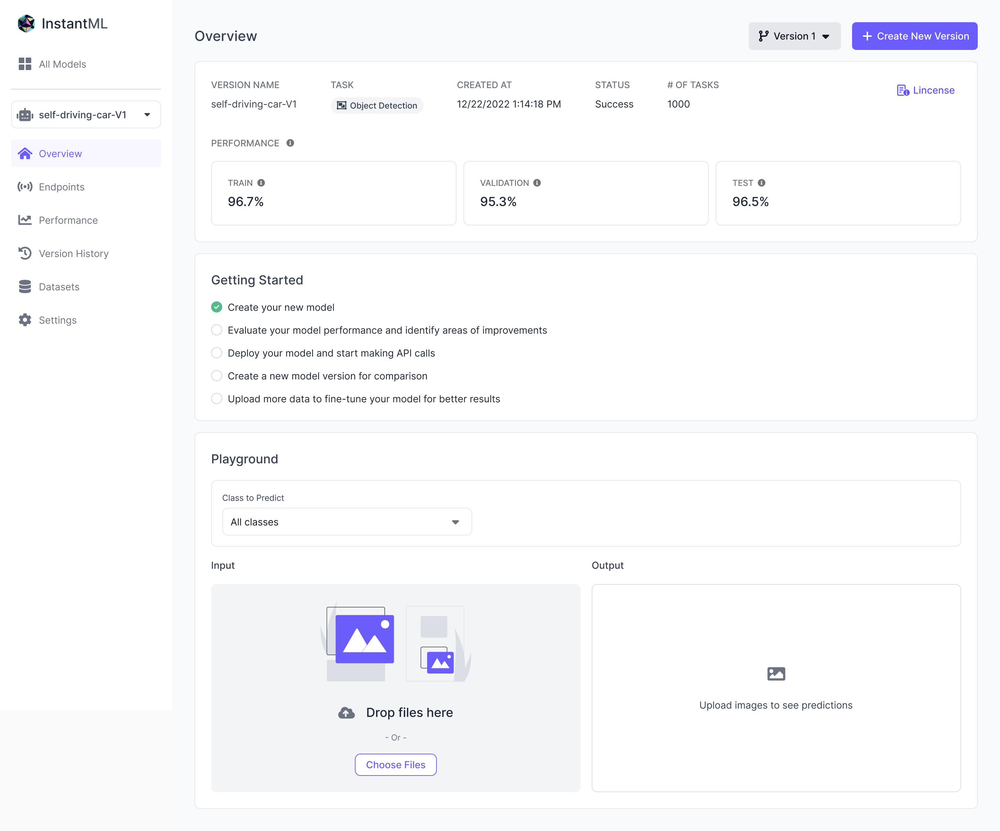
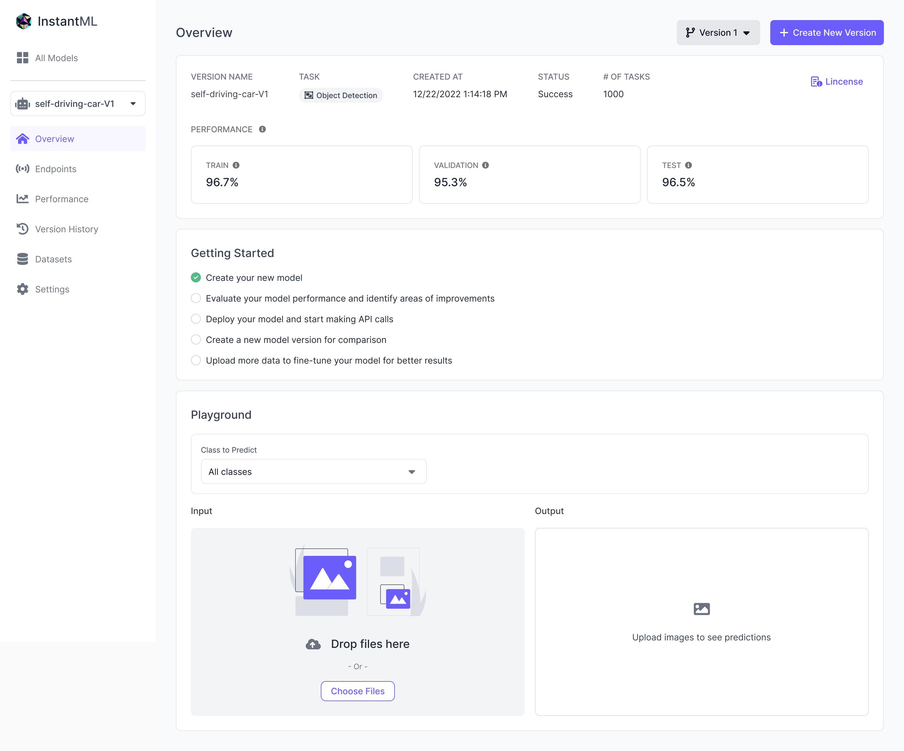

Building a machine learning model requires ML expertise and resources. InstantML is an end-to-end solution that enables teams with constrained ML and engineering resources to build a machine learning model with just a few clicks—from zero to production—in a matter of hours. InstantML was first released as a model training feature in Rapid, Scale’s data labeling platform. I led the design for the standalone product version, which has not yet been released. Work shown below is limited due to NDA.
